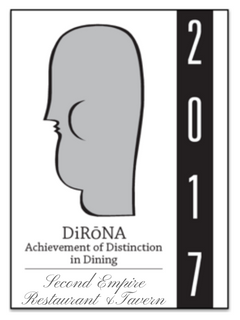
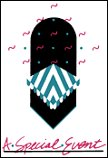

Travelers’ Choice Best of the Best 2025
Ranked #3 nationally for Fine Dining.
Historic Dodd-Hinsdale House · Circa 1879
Fine dining and tavern hospitality inside Raleigh’s restored Dodd-Hinsdale House — classical rooms, contemporary American plates, and an award-winning wine program.


Reserve on OpenTable, call the house, or explore seasonal menus, private dining, and gift certificates.
Welcome
Second Empire satisfies the highest of standards. Our delectable menu and polished service that have won us the AAA Four Diamond Award, the DiRoNa Award and the Wine Spectator Award of Excellence since 1998 will assure you a truly unique dining experience.
Our Tavern and Atrium Room provide a more casual feel without sacrificing excellence. Simply put, a trip to Second Empire is an experience unlike any other.
Recognition
We preserve their listed honors exactly — including the Wine Spectator years shown on the live site.
Ranked #3 nationally for Fine Dining.

Distinguished Restaurants of North America — twice! Achievement of Distinction in Dining.
Awarded 3 times — noted on their site as Raleigh’s only recipient in earlier coverage.
8 years running as listed: 1999, 2000, 2001, 2002, 2003, 2004, 2005, 2006. Site also notes Award of Excellence since 1998/1999.
Your special experience

We will develop and present for you a special and unforgettable dining experience.
Plan an event
Second Empire is the perfect setting for your rehearsal dinner, ceremony or reception.
Weddings
An opportunity for 2 to 4 people to dine exclusively in our kitchen with Chef Daniel Schurr and his staff.
Chef’s TableLatest news
Second Empire Restaurant and Tavern has achieved national recognition, ranking number 3 in the United States for Fine Dining in the Travelers’ Choice Awards Best of the Best 2025.
Tripadvisor writes that Second Empire “leans into an elegant, historical vibe” with seasonal dishes — “think duck breast and scallops” — and a staff that “knows the menu front to back.”